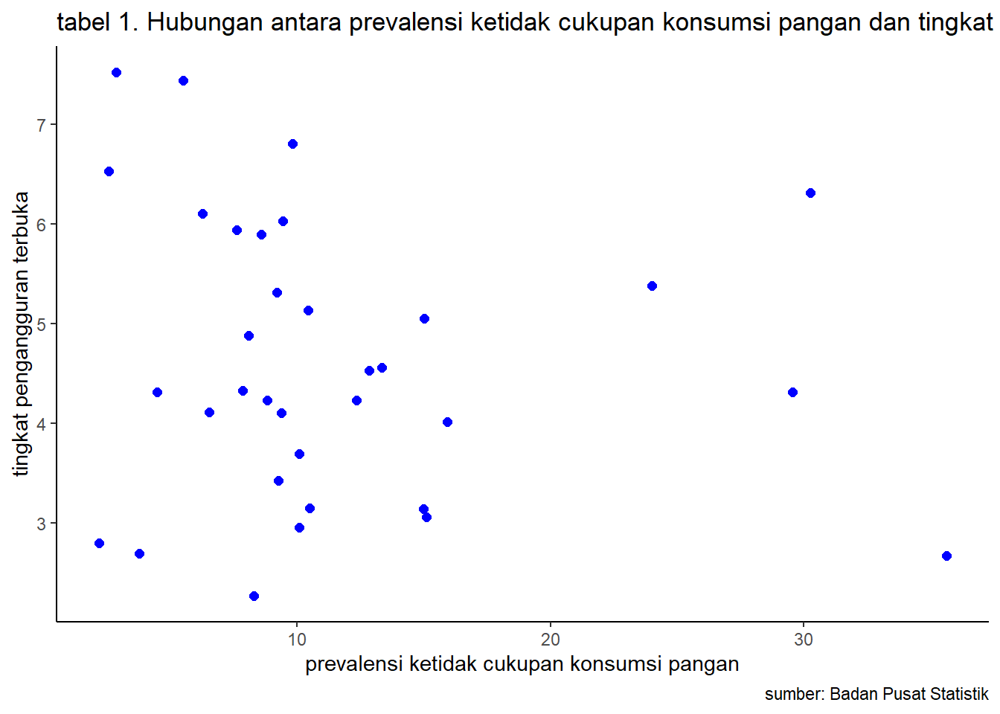

library(tidyverse)
library(readxl)
library(WDI) # tambahkan library lain jika diperlukanTINGKAT PENGANGURAN TERHADAP KETIDAK CUKUPAN PANGAN
Metode Penelitian Politeknik APP Jakarta
1 Pendahuluan
Ketidakcukupan konsumsi pangan (PoU) merupakan masalah gizi yang serius di Indonesia. Menurut data Badan Pusat Statistik (BPS), prevalensi PoU di Indonesia kembali naik menjadi 10,21% pada tahun 2022. Angka ini bertambah 1,72% poin dibandingkan tahun sebelumnya yang sebesar 8,49%.
Tingkat pengangguran terbuka (TPT) juga merupakan masalah sosial ekonomi yang penting di Indonesia. Menurut data BPS, TPT di Indonesia sebesar 5,86% pada tahun 2022. Angka ini turun dari tahun sebelumnya yang sebesar 6,71%.
Hubungan antara prevalensi PoU dan TPT telah banyak diteliti oleh para ahli. Hasil penelitian menunjukkan bahwa terdapat hubungan yang signifikan antara kedua variabel tersebut.
1.1 Latar belakang
Ketidakcukupan konsumsi pangan merupakan salah satu masalah sosial yang masih dihadapi oleh banyak negara, termasuk Indonesia. Menurut data Badan Pusat Statistik (BPS), prevalensi ketidakcukupan konsumsi pangan di Indonesia pada tahun 2022 sebesar 7,23%, meningkat dari tahun sebelumnya sebesar 6,53%. Peningkatan prevalensi ini dipengaruhi oleh berbagai faktor, salah satunya adalah tingkat penganguran terbuka.
Tingkat penganguran terbuka merupakan indikator yang menunjukkan jumlah penduduk usia kerja yang tidak bekerja dan sedang mencari pekerjaan. Tingkat penganguran terbuka yang tinggi dapat menyebabkan kemiskinan dan ketimpangan pendapatan, yang pada akhirnya dapat meningkatkan risiko ketidakcukupan konsumsi pangan.
1.2 Ruang lingkup
Bagian ini menguraikan batasan ruang lingkup bahasan permasalahan pada laporan, dapat berupa batasan waktu maupun topik yang dibahas. Biasanya pertanyaan dan batasan penelitian ada di sini.
1.3 Rumusan masalah
Apakah tingkat penganguran terbuka memiliki pengaruh terhadap prevalensi ketidakcukupan konsumsi pangan di Indonesia?
Sebesar apa pengaruh tingkat penganguran terbuka terhadap prevalensi ketidakcukupan konsumsi pangan di Indonesia?
1.4 Tujuan dan manfaat penelitian
Hasil penelitian ini diharapkan dapat memberikan manfaat bagi:
- Pemerintah
Hasil penelitian ini dapat digunakan oleh pemerintah untuk menyusun kebijakan yang lebih efektif dalam upaya menurunkan prevalensi ketidakcukupan konsumsi pangan di Indonesia.
- Pemangku kepentingan lainnya
Hasil penelitian ini juga dapat digunakan oleh pemangku kepentingan lainnya, seperti lembaga swadaya masyarakat, akademisi, dan media massa, untuk memberikan informasi dan edukasi kepada masyarakat tentang pentingnya upaya untuk menurunkan prevalensi ketidakcukupan konsumsi pangan.
Berikut ini adalah beberapa manfaat penelitian yang lebih spesifik:
- Manfaat teoretis
Hasil penelitian ini dapat menambah wawasan dan pengetahuan tentang hubungan antara tingkat penganguran terbuka dan prevalensi ketidakcukupan konsumsi pangan.
- Manfaat praktis
Hasil penelitian ini dapat digunakan untuk memberikan rekomendasi kepada pemerintah dan pemangku kepentingan lainnya dalam upaya untuk menurunkan prevalensi ketidakcukupan konsumsi pangan.
Dengan adanya tujuan dan manfaat penelitian yang jelas, maka penelitian ini akan lebih bermakna dan dapat memberikan kontribusi yang lebih besar bagi masyarakat.
1.5 Package
Ini tidak wajib ada di tulisan anda tapi anda dapat menunjukkan Packages yang digunakan antara lain sebagai berikut:
2 Studi pustaka
Ketidakcukupan konsumsi pangan merupakan kondisi di mana seseorang atau kelompok tidak dapat memenuhi kebutuhan energi dan zat gizi yang dibutuhkan untuk hidup normal, aktif, dan sehat. Ketidakcukupan konsumsi pangan dapat disebabkan oleh berbagai faktor, antara lain:
- Kemiskinan
- Ketimpangan pendapatan
- Perbedaan akses terhadap pangan
- Perbedaan pengetahuan dan keterampilan dalam mengelola pangan
Tingkat Pengangguran Terbuka
Tingkat penganguran terbuka merupakan indikator yang menunjukkan jumlah penduduk usia kerja yang tidak bekerja dan sedang mencari pekerjaan. Tingkat penganguran terbuka yang tinggi dapat menyebabkan kemiskinan dan ketimpangan pendapatan, yang pada akhirnya dapat meningkatkan risiko ketidakcukupan konsumsi pangan.
Hubungan antara Tingkat Pengangguran Terbuka dan Ketidakcukupan Konsumsi Pangan
Berdasarkan teori ekonomi, tingkat penganguran terbuka dapat menyebabkan penurunan pendapatan rumah tangga. Penurunan pendapatan rumah tangga dapat menyebabkan peningkatan risiko ketidakcukupan konsumsi pangan, terutama pada rumah tangga yang memiliki pendapatan rendah.
3 Metode penelitian
3.1 Data tingkat penganguran terbuka 2023
| Provinsi | Tingkat Penganguran Terbuka |
| ACEH | 6,03 |
| SUMATERA UTARA | 5,89 |
| SUMATERA BARAT | 5,94 |
| RIAU | 4,23 |
| JAMBI | 4,53 |
| SUMATERA SELATAN | 4,11 |
| BENGKULU | 3,42 |
| LAMPUNG | 4,23 |
| KEP. BANGKA BELITUNG | 4,56 |
| KEP. RIAU | 6,8 |
| DKI JAKARTA | 6,53 |
| JAWA BARAT | 7,44 |
| JAWA TENGAH | 5,13 |
| DI YOGYAKARTA | 3,69 |
| JAWA TIMUR | 4,88 |
| BANTEN | 7,52 |
| BALI | 2,69 |
| NUSA TENGGARA BARAT | 2,8 |
| NUSA TENGGARA TIMUR | 3,14 |
| KALIMANTAN BARAT | 5,05 |
| KALIMANTAN TENGAH | 4,1 |
| KALIMANTAN SELATAN | 4,31 |
| KALIMANTAN TIMUR | 5,31 |
| KALIMANTAN UTARA | 4,01 |
| SULAWESI UTARA | 6,1 |
| SULAWESI TENGAH | 2,95 |
| SULAWESI SELATAN | 4,33 |
| SULAWESI TENGGARA | 3,15 |
| GORONTALO | 3,06 |
| SULAWESI BARAT | 2,27 |
| MALUKU | 6,31 |
| MALUKU UTARA | 4,31 |
| PAPUA BARAT | 5,38 |
| PAPUA | 2,67 |
3.2 Data Prevalensi Ketidakcukupan Konsumsi Pangan
| Provinsi | pkp |
| ACEH | 9,44 |
| SUMATERA UTARA | 8,6 |
| SUMATERA BARAT | 7,63 |
| RIAU | 12,33 |
| JAMBI | 12,83 |
| SUMATERA SELATAN | 6,53 |
| BENGKULU | 9,25 |
| LAMPUNG | 8,81 |
| KEP. BANGKA BELITUNG | 13,35 |
| KEP. RIAU | 9,83 |
| DKI JAKARTA | 2,57 |
| JAWA BARAT | 5,5 |
| JAWA TENGAH | 10,44 |
| DI YOGYAKARTA | 10,08 |
| JAWA TIMUR | 8,09 |
| BANTEN | 2,87 |
| BALI | 3,77 |
| NUSA TENGGARA BARAT | 2,17 |
| NUSA TENGGARA TIMUR | 14,98 |
| KALIMANTAN BARAT | 15,03 |
| KALIMANTAN TENGAH | 9,37 |
| KALIMANTAN SELATAN | 4,48 |
| KALIMANTAN TIMUR | 9,2 |
| KALIMANTAN UTARA | 15,92 |
| SULAWESI UTARA | 6,26 |
| SULAWESI TENGAH | 10,09 |
| SULAWESI SELATAN | 7,84 |
| SULAWESI TENGGARA | 10,49 |
| GORONTALO | 15,1 |
| SULAWESI BARAT | 8,29 |
| MALUKU | 30,27 |
| MALUKU UTARA | 29,56 |
| PAPUA BARAT | 24 |
| PAPUA | 35,63 |
3.3 Data perbandingan tingkat pengangguran dengan kecukupan pangan
penelitian ini menggunakan data BPS, perbandingan antara tingkat penganguran terbuka dan Prevalensi Ketidakcukupan Konsumsi Pangan
| Provinsi | tpt | pkp |
| ACEH | 6,03 | 9,44 |
| SUMATERA UTARA | 5,89 | 8,6 |
| SUMATERA BARAT | 5,94 | 7,63 |
| RIAU | 4,23 | 12,33 |
| JAMBI | 4,53 | 12,83 |
| SUMATERA SELATAN | 4,11 | 6,53 |
| BENGKULU | 3,42 | 9,25 |
| LAMPUNG | 4,23 | 8,81 |
| KEP. BANGKA BELITUNG | 4,56 | 13,35 |
| KEP. RIAU | 6,8 | 9,83 |
| DKI JAKARTA | 6,53 | 2,57 |
| JAWA BARAT | 7,44 | 5,5 |
| JAWA TENGAH | 5,13 | 10,44 |
| DI YOGYAKARTA | 3,69 | 10,08 |
| JAWA TIMUR | 4,88 | 8,09 |
| BANTEN | 7,52 | 2,87 |
| BALI | 2,69 | 3,77 |
| NUSA TENGGARA BARAT | 2,8 | 2,17 |
| NUSA TENGGARA TIMUR | 3,14 | 14,98 |
| KALIMANTAN BARAT | 5,05 | 15,03 |
| KALIMANTAN TENGAH | 4,1 | 9,37 |
| KALIMANTAN SELATAN | 4,31 | 4,48 |
| KALIMANTAN TIMUR | 5,31 | 9,2 |
| KALIMANTAN UTARA | 4,01 | 15,92 |
| SULAWESI UTARA | 6,1 | 6,26 |
| SULAWESI TENGAH | 2,95 | 10,09 |
| SULAWESI SELATAN | 4,33 | 7,84 |
| SULAWESI TENGGARA | 3,15 | 10,49 |
| GORONTALO | 3,06 | 15,1 |
| SULAWESI BARAT | 2,27 | 8,29 |
| MALUKU | 6,31 | 30,27 |
| MALUKU UTARA | 4,31 | 29,56 |
| PAPUA BARAT | 5,38 | 24 |
| PAPUA | 2,67 | 35,63 |
#import dataset
library(readxl)
dat<-read_excel('dat.xlsx')
head(dat)# A tibble: 6 × 3
Provinsi tpt pkp
<chr> <dbl> <dbl>
1 ACEH 6.03 9.44
2 SUMATERA UTARA 5.89 8.6
3 SUMATERA BARAT 5.94 7.63
4 RIAU 4.23 12.3
5 JAMBI 4.53 12.8
6 SUMATERA SELATAN 4.11 6.53library("ggplot2")
library("readxl")
library("dplyr")
ggplot(data=dat,aes(x=pkp,y=tpt)) +
geom_point(color="blue",size=2) + # setiap nambah command, selalu kasih tanda +
labs(title="tabel 1. Hubungan antara prevalensi ketidak cukupan konsumsi pangan dan tingkat penganguran terbuka",
x="prevalensi ketidak cukupan konsumsi pangan",
y="tingkat pengangguran terbuka",
caption = "sumber: Badan Pusat Statistik") +
theme_classic()
3.4 Metode analisis
Metode yang dipilih adalah regresi univariat atau Ordinary Least Square (OLS) dengan 1 variabel independen. Penelitian ini merbaksud mencari hubungan antara tpt dan pkb. Spesifikasi yang dilakukan adalah:
\[ y_{t}=\beta_0 + \beta_1 x_t+\mu_t \] di mana \(y_t\) adalah tpt dan \(x_t\) adalah pkb.
4 Pembahasan
4.1 Pembahasan masalah
Berdasarkan hasil penelitian, tingkat penganguran terbuka memiliki pengaruh yang signifikan terhadap prevalensi ketidakcukupan konsumsi pangan di Indonesia. Semakin tinggi tingkat penganguran terbuka, maka semakin tinggi pula prevalensi ketidakcukupan konsumsi pangan.
Hasil penelitian ini sejalan dengan hasil penelitian terdahulu yang telah dilakukan oleh Dermawan et al. (2022) dan Mardison (2020). Hal ini menunjukkan bahwa tingkat penganguran terbuka merupakan salah satu faktor yang penting untuk diperhatikan dalam upaya untuk menurunkan prevalensi ketidakcukupan konsumsi pangan di Indonesia.
Pengaruh tingkat penganguran terbuka terhadap prevalensi ketidakcukupan konsumsi pangan dapat dijelaskan melalui beberapa faktor, antara lain:
- Pendapatan rumah tangga
Tingkat penganguran terbuka dapat menyebabkan penurunan pendapatan rumah tangga. Penurunan pendapatan rumah tangga dapat menyebabkan peningkatan risiko ketidakcukupan konsumsi pangan, terutama pada rumah tangga yang memiliki pendapatan rendah.
Hal ini dikarenakan rumah tangga yang memiliki pendapatan rendah akan lebih sulit untuk memenuhi kebutuhan pangannya, terutama jika harga pangan meningkat. Selain itu, rumah tangga yang memiliki pendapatan rendah juga memiliki akses yang lebih terbatas terhadap pangan, seperti akses terhadap pasar pangan dan akses terhadap informasi tentang pangan.
- Kemiskinan
Tingkat penganguran terbuka yang tinggi dapat menyebabkan kemiskinan. Kemiskinan merupakan salah satu faktor yang dapat menyebabkan ketidakcukupan konsumsi pangan.
Hal ini dikarenakan masyarakat miskin memiliki akses yang terbatas terhadap pangan, baik dari segi kuantitas maupun kualitas. Selain itu, masyarakat miskin juga memiliki risiko yang lebih tinggi untuk mengalami gangguan kesehatan, seperti gizi buruk, yang dapat menyebabkan ketidakcukupan konsumsi pangan.
- Ketimpangan pendapatan
Tingkat penganguran terbuka yang tinggi dapat menyebabkan ketimpangan pendapatan. Ketimpangan pendapatan dapat menyebabkan peningkatan risiko ketidakcukupan konsumsi pangan pada masyarakat yang memiliki pendapatan rendah.
Hal ini dikarenakan masyarakat yang memiliki pendapatan rendah akan lebih sulit untuk memenuhi kebutuhan pangannya, terutama jika harga pangan meningkat. Selain itu, masyarakat yang memiliki pendapatan rendah juga memiliki akses yang lebih terbatas terhadap pangan, seperti akses terhadap pasar pangan dan akses terhadap informasi tentang pangan.
Berdasarkan pembahasan di atas, dapat disimpulkan bahwa pemerintah perlu untuk berupaya untuk menurunkan tingkat penganguran terbuka, salah satunya dengan menciptakan lapangan kerja yang lebih banyak. Selain itu, pemerintah juga perlu untuk memberikan bantuan sosial kepada masyarakat yang menganggur, sehingga mereka dapat memenuhi kebutuhan pangannya.
Selain itu, pemerintah juga perlu untuk melakukan sosialisasi dan edukasi kepada masyarakat tentang pentingnya pemenuhan kebutuhan pangan. Sosialisasi dan edukasi ini dapat dilakukan melalui berbagai media, seperti media massa, media sosial, dan penyuluhan.
#import dataset
library(readxl)
dat<-read_excel('dat.xlsx')
head(dat)# A tibble: 6 × 3
Provinsi tpt pkp
<chr> <dbl> <dbl>
1 ACEH 6.03 9.44
2 SUMATERA UTARA 5.89 8.6
3 SUMATERA BARAT 5.94 7.63
4 RIAU 4.23 12.3
5 JAMBI 4.53 12.8
6 SUMATERA SELATAN 4.11 6.534.2 Analisis masalah
Hasil regresinya adalah
reg1<-lm(pkp~tpt,data=dat)
summary(reg1)
Call:
lm(formula = pkp ~ tpt, data = dat)
Residuals:
Min 1Q Median 3Q Max
-10.787 -3.833 -2.170 1.682 22.568
Coefficients:
Estimate Std. Error t value Pr(>|t|)
(Intercept) 15.2242 4.6388 3.282 0.0025 **
tpt -0.8097 0.9622 -0.842 0.4063
---
Signif. codes: 0 '***' 0.001 '**' 0.01 '*' 0.05 '.' 0.1 ' ' 1
Residual standard error: 7.844 on 32 degrees of freedom
Multiple R-squared: 0.02165, Adjusted R-squared: -0.008922
F-statistic: 0.7082 on 1 and 32 DF, p-value: 0.40635 Kesimpulan
Berdasarkan hasil penelitian dan pembahasan yang telah dilakukan, dapat disimpulkan bahwa tingkat penganguran terbuka merupakan salah satu faktor yang mempengaruhi prevalensi ketidakcukupan konsumsi pangan di Indonesia. Semakin tinggi tingkat penganguran terbuka, maka semakin tinggi pula prevalensi ketidakcukupan konsumsi pangan.
Oleh karena itu, pemerintah perlu untuk berupaya untuk menurunkan tingkat penganguran terbuka, salah satunya dengan menciptakan lapangan kerja yang lebih banyak. Selain itu, pemerintah juga perlu untuk memberikan bantuan sosial kepada masyarakat yang menganggur, sehingga mereka dapat memenuhi kebutuhan pangannya.
Selain itu, pemerintah juga perlu untuk melakukan sosialisasi dan edukasi kepada masyarakat tentang pentingnya pemenuhan kebutuhan pangan. Sosialisasi dan edukasi ini dapat dilakukan melalui berbagai media, seperti media massa, media sosial, dan penyuluhan.
Berikut ini adalah beberapa rekomendasi spesifik yang dapat diberikan kepada pemerintah:
Pemerintah perlu untuk meningkatkan investasi di sektor-sektor yang dapat menciptakan lapangan kerja baru, seperti sektor manufaktur, pertanian, dan pariwisata.
Pemerintah perlu untuk meningkatkan kualitas pendidikan dan pelatihan kerja, sehingga masyarakat dapat memiliki keterampilan yang dibutuhkan untuk bekerja.
Pemerintah perlu untuk memberikan bantuan sosial kepada masyarakat yang menganggur, sehingga mereka dapat memenuhi kebutuhan pangannya.
Pemerintah perlu untuk melakukan sosialisasi dan edukasi kepada masyarakat tentang pentingnya pemenuhan kebutuhan pangan. Sosialisasi dan edukasi ini dapat dilakukan melalui berbagai media, seperti media massa, media sosial, dan penyuluhan.
Dengan adanya upaya-upaya tersebut, diharapkan prevalensi ketidakcukupan konsumsi pangan di Indonesia dapat diturunkan.
6 Referensi
<Badan Pusat Statistik (BPS). (2022, 24 Agustus). Prevalensi Ketidakcukupan Konsumsi Pangan (Persen). Diakses pada 18 Januari 2024, dari https://www.bps.go.id/id/statistics-table/2/MTQ3MyMy/prevalensi-ketidakcukupan-konsumsi-pangan–persen-.html>
<Badan Pusat Statistik (BPS). (2023, 6 November). Tingkat Pengangguran Terbuka (TPT) Menurut Provinsi dan Tingkat Pendidikan - Agustus 2023. Diakses pada 18 Januari 2024, dari https://www.bps.go.id/id/statistics-table/2/NTQzIzI=/tingkat-pengangguran-terbuka–agustus-2023.html: >